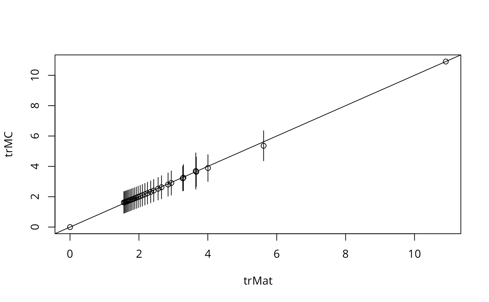

Spatial weights matrix powers traces
trW.RdThe function is used to prepare a vector of traces of powers of a spatial weights matrix
Usage
trW(W=NULL, m = 30, p = 16, type = "mult", listw=NULL, momentsSymmetry=TRUE)
mom_calc(lw, m)
mom_calc_int2(is, m, nb, weights, Card)Arguments
- W
A spatial weights matrix in CsparseMatrix form
- m
The number of powers; must be an even number for ‘type’=“moments” (default changed from 100 to 30 (2010-11-17))
- p
The number of samples used in Monte Carlo simulation of the traces if type is MC (default changed from 50 to 16 (2010-11-17))
- type
Either “mult” (default) for powering a sparse matrix (with moderate or larger N, the matrix becomes dense, and may lead to swapping), or “MC” for Monte Carlo simulation of the traces (the first two simulated traces are replaced by their analytical equivalents), or “moments” to use the looping space saving algorithm proposed by Smirnov and Anselin (2009) - for “moments”,
Wmust be symmetric, for row-standardised weights through a similarity transformation- listw, lw
a listw object, which should either be fully symmetric, or be constructed as similar to symmetric from intrinsically symmetric neighbours using
similar.listw, used with ‘type’=“moments”- momentsSymmetry
default TRUE; assert Smirnov/Anselin symmetry assumption
- is
(used internally only in
mom_calc_int2for ‘type’=“moments” on a cluster)- nb
(used internally only in
mom_calc_int2for ‘type’=“moments” on a cluster)- weights
(used internally only in
mom_calc_int2for ‘type’=“moments” on a cluster)- Card
(used internally only in
mom_calc_int2for ‘type’=“moments” on a cluster)
Value
A numeric vector of m traces, with “timings” and “type” attributes; the ‘type’=“MC” also returns the standard deviation of the p-vector V divided by the square root of p as a measure of spread for the trace estimates.
References
LeSage J and RK Pace (2009) Introduction to Spatial Econometrics. CRC Press, Boca Raton, pp. 96–105; Smirnov O and L Anselin (2009) An O(N) parallel method of computing the Log-Jacobian of the variable transformation for models with spatial interaction on a lattice. Computational Statistics and Data Analysis 53 (2009) 2983–2984.
Author
Roger Bivand Roger.Bivand@nhh.no
Examples
require("sf", quietly=TRUE)
columbus <- st_read(system.file("shapes/columbus.gpkg", package="spData")[1], quiet=TRUE)
#require(spdep, quietly=TRUE)
col.gal.nb <- spdep::read.gal(system.file("weights/columbus.gal", package="spData")[1])
listw <- spdep::nb2listw(col.gal.nb)
W <- as(listw, "CsparseMatrix")
system.time(trMat <- trW(W, type="mult"))
#> user system elapsed
#> 0.003 0.000 0.003
str(trMat)
#> num [1:30] 0 10.91 3.65 5.62 3.66 ...
#> - attr(*, "timings")= Named num [1:2] 0.003 0.003
#> ..- attr(*, "names")= chr [1:2] "user.self" "elapsed"
#> - attr(*, "type")= chr "mult"
#> - attr(*, "n")= int 49
set.seed(1100)
system.time(trMC <- trW(W, type="MC"))
#> user system elapsed
#> 0.005 0.000 0.005
str(trMC)
#> num [1:30] 0 10.91 3.69 5.36 3.64 ...
#> - attr(*, "sd")= num [1:30] NA NA 0.598 0.495 0.489 ...
#> - attr(*, "timings")= Named num [1:2] 0.005 0.005
#> ..- attr(*, "names")= chr [1:2] "user.self" "elapsed"
#> - attr(*, "type")= chr "MC"
#> - attr(*, "n")= int 49
plot(trMat, trMC)
abline(a=0, b=1)
for(i in 3:length(trMC)) {
segments(trMat[i], trMC[i]-2*attr(trMC, "sd")[i], trMat[i],
trMC[i]+2*attr(trMC, "sd")[i])
}

listwS <- similar.listw(listw)
W <- forceSymmetric(as(listwS, "CsparseMatrix"))
system.time(trmom <- trW(listw=listwS, m=24, type="moments"))
#> user system elapsed
#> 0.002 0.000 0.002
str(trmom)
#> num [1:24] 0 10.91 3.65 5.62 3.66 ...
#> - attr(*, "timings")= Named num [1:2] 0.001 0.002
#> ..- attr(*, "names")= chr [1:2] "user.self" "elapsed"
#> - attr(*, "type")= chr "moments"
#> - attr(*, "n")= int 49
all.equal(trMat[1:24], trmom, check.attributes=FALSE)
#> [1] TRUE
system.time(trMat <- trW(W, m=24, type="mult"))
#> user system elapsed
#> 0.003 0.000 0.003
str(trMat)
#> num [1:24] 0 10.91 3.65 5.62 3.66 ...
#> - attr(*, "timings")= Named num [1:2] 0.003 0.003
#> ..- attr(*, "names")= chr [1:2] "user.self" "elapsed"
#> - attr(*, "type")= chr "mult"
#> - attr(*, "n")= int 49
all.equal(trMat, trmom, check.attributes=FALSE)
#> [1] TRUE
set.seed(1)
system.time(trMC <- trW(W, m=24, type="MC"))
#> user system elapsed
#> 0.007 0.000 0.007
str(trMC)
#> num [1:24] 0 10.91 2.44 4.97 2.82 ...
#> - attr(*, "sd")= num [1:24] NA NA 0.618 0.501 0.451 ...
#> - attr(*, "timings")= Named num [1:2] 0.007 0.007
#> ..- attr(*, "names")= chr [1:2] "user.self" "elapsed"
#> - attr(*, "type")= chr "MC"
#> - attr(*, "n")= int 49
# \dontrun{
data(boston, package="spData")
listw <- spdep::nb2listw(boston.soi)
listwS <- similar.listw(listw)
system.time(trmom <- trW(listw=listwS, m=24, type="moments"))
#> user system elapsed
#> 0.125 0.000 0.124
str(trmom)
#> num [1:24] 0 124.2 32.7 63.7 33.2 ...
#> - attr(*, "timings")= Named num [1:2] 0.125 0.124
#> ..- attr(*, "names")= chr [1:2] "user.self" "elapsed"
#> - attr(*, "type")= chr "moments"
#> - attr(*, "n")= int 506
library(parallel)
nc <- max(2L, detectCores(logical=FALSE), na.rm = TRUE)-1L
# set nc to 1L here
if (nc > 1L) nc <- 1L
coresOpt <- get.coresOption()
invisible(set.coresOption(nc))
if(!get.mcOption()) {
cl <- makeCluster(get.coresOption())
set.ClusterOption(cl)
}
system.time(trmomp <- trW(listw=listwS, m=24, type="moments"))
#> user system elapsed
#> 0.124 0.000 0.125
if(!get.mcOption()) {
set.ClusterOption(NULL)
stopCluster(cl)
}
all.equal(trmom, trmomp, check.attributes=FALSE)
#> [1] TRUE
invisible(set.coresOption(coresOpt))
# }